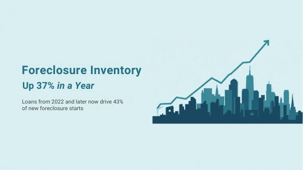
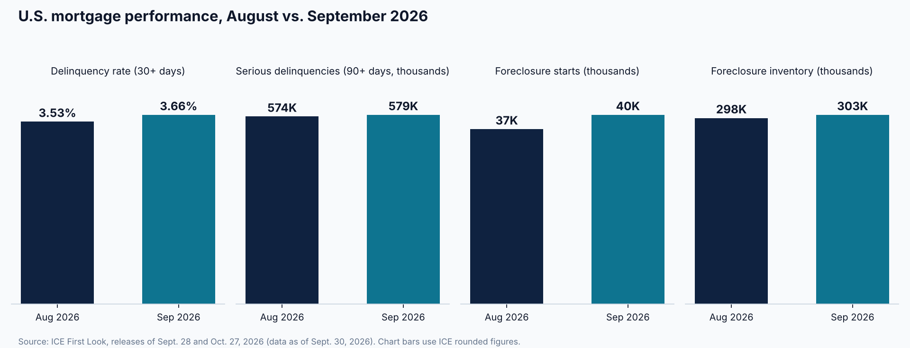

Foreclosure Inventory Up 37% in a Year as Loans From 2022 and Later Drive 43% of New Starts

Mortgage stress is still rising at the margin, even as most borrowers keep paying. ICE's First Look report, released October 27, 2026 with data as of September 30, shows the national delinquency rate at 3.66%, up 12 basis points from August. Serious delinquencies, meaning loans 90 or more days past due and not yet in foreclosure, stood at 579,000, or 1.04% of active loans. That is up 102,000 from a year earlier, though the share was unchanged from August's 1.04%.
The foreclosure pipeline is where the year-over-year change is most visible. ICE counted 40,000 foreclosure starts in September, up 8.2% from August but about 3% below September 2025. Pre-sale foreclosure inventory reached 303,000 properties, or a 0.55% rate, which HousingWire and National Mortgage News both report as up 37% from a year ago and the highest level since early 2019. Completed foreclosure sales totaled 8,200, up 14.5% from a year earlier.

The composition of that pipeline matters as much as its size. According to ICE, loans originated in 2022 or later made up 43% of September foreclosure starts and 49% of completed foreclosure sales, and more than three quarters of active foreclosures had been delinquent for less than 18 months. In other words, loans from the last few origination years account for a disproportionate share of a pipeline that is mostly early-stage. Starts are not accelerating overall, but the stock of loans already in the process is far larger than it was a year ago.
For investors and lenders evaluating deals this week, the data points in two directions. Distressed inventory is building, which can widen the pool of purchase opportunities and push more properties through auction and bank-owned sales. At the same time, a rising delinquency base tends to keep lenders attentive to borrower liquidity, leverage, and property cash flow. Neither effect is uniform; ICE reports national figures, and conditions differ widely by state, loan type, and vintage.
The September data do not describe a broad credit event. The overall delinquency rate remains below its September 2019 level, by ICE's measure, and foreclosure starts are slightly lower than a year ago. They do describe a pipeline that is larger and younger than it was in 2025. Investors who can document coverage ratios, leverage, and reserves clearly will be better positioned in whichever direction the market moves next.